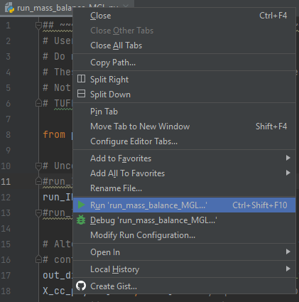

1.8 Mass conservation analysis
Two options are available to assess the mass conservation performance of the WQ Module. These use:
- MATLAB, or
- Python
These perform identical calculations but are offered to support users in their preference for post processing platforms. Both platforms can handle simulations that have used either the MGL or MMM units systems.
The mass conservation analysis (by its nature) deals with mass, and as such, whilst the MMM analysis expects millimoles inputs for both user parameters and WQ Module results files, the core of the analysis engine operates in units of mass. Mass conservation outcomes from both MGL and MMM units systems are similarly reported as mass (not moles) errors.
1.8.1 MATLAB
The MATLAB mass conservation scripts should be executed using MATLAB R2022a, or later.
1.8.1.1 Set up
The following steps set up the mass conservation analysis in MATLAB:
- Open a MATLAB session
- Navigate to the directory where the mass conservation model has been downloaded (assumed to be
C:\TUFLOWFV\Models\wqm\mass_conservation_model\ here) - Set the working directory to be the same location
- In the MATLAB editor (or any text editor), open either of the following mfiles, depending on the units systems being used (MGL or MMM):
C:\TUFLOWFV\Models\wqm\mass_conservation_model\execute_mass_conservation_MGL.m , orC:\TUFLOWFV\Models\wqm\mass_conservation_model\execute_mass_conservation_MMM.m
These files:
- Control the mass conservation analysis, and
- Contain the user specifiable and alterable parameters that are required by the mass conservation analysis
In addition to the above, two folders that contain MATLAB scripts need to be added to the MATLAB path, including adding all subfolders. The mass conservation analysis uses scripts in these folders. These folders are:
- The MATLAB scripts provided here. This folder is named TUFLOWFV_Matlab_Utilities_001
- The functions folder included in the zip download, which (using the assumed download location) is here:
C:\TUFLOWFV\Models\wqm\mass_conservation_model\matlab\functions\
None of the scripts in either of these folders should be edited.
1.8.1.2 Execution
The following steps execute the mass conservation analysis in MATLAB:
- Set the
runID variable inexecute_mass_conservation_MGL.m orexecute_mass_conservation_MMM.m to be the simulation desired. Do this by uncommenting the required line. ThisrunID will need to be that of a simulation that has already been executed (see Section 1.6.2). The naming convention is the same as the commands used previously in the command window to execute a simulation:MB_<simulation class>_<units system>
- Make sure that the series of parameters set in
execute_mass_conservation_MGL.m (orexecute_mass_conservation_MMM.m ) coincide exactly with those used to execute the relevant water quality simulation. Any differences will adversely impact mass conservation calculations. To do so:- Only alter
execute_mass_conservation_MGL.m (orexecute_mass_conservation_MMM.m ). Do not alter any other mfiles - Within this mfile, only alter parameters in the section titled ‘
% User inputs ’:
- Only alter
Figure 1.33: Mass conservation mfile user inputs section
In this regard:
- Not all parameters are always used. For example, the DO simulation class uses none of the parameters listed in this section, other than
runID - Hyperlinks to the user manual descriptions of all parameters are included in the mfile
- Do not alter the lengths of the arrays – only change their values.
- Do not add further phytoplankton groups. The mass conservation model has two groups, with one each from the Basic and Advanced classes, so does not need additional groups to serve its purpose
- The user parameters must match those specified in the relevant WQ Module control file. If these differ then mass conservation will not hold. Ensure that any changes made to WQ Module control file parameters are mirrored in the parameter section shown above. The parameters in the WQ Module control files and MGL and MMM mfiles are consistent within the unchanged zip download
- Do not alter any other mfiles
To execute the mass conservation analysis, and having navigated to the MATLAB directory containing
for MGL units systems, or
for MMM units systems.
The following will initially appear (using the MB_DO_MGL model as an example)
Figure 1.34: Initial MATLAB commentary
If running the mass conservation process for the first time, a MATLAB warning similar to the following may appear. This can be ignored, and will not appear on subsequent runs of the same WQ Module simulation name:
- Could Not Find
C:\TUFLOWFV\Models\wqm\mass_conservation_model\results\MB_DO_MGL_mass_conservation.xlsx
1.8.1.3 Outputs
All outputs are written to the results folder at:
C:\TUFLOWFV\Models\wqm\mass_conservation_model\results\
Two results files are written (named according to simulation as above) in the units system adopted (MGL is used as an example here):
MB_DO_MGL_mass_conservation.mat . This is a MATLAB datafile that contains all environment, flux and mass conservation data. The latter are timeseries, integrated over the entire mass conservation model domain. This can be loaded into MATLAB for further analysis using the MATLAB command (again, with varying name based on therunID ):
MB_DO_MGL_mass_conservation.xlsx . This contains the same flux and mass conservation data asMB_DO_MGL_mass_conservation.mat , but as columns in an Excel spreadsheet. These can also be used in further analysis as required
MATLAB also produces figures that graphically present the mass conservation analysis for every computed variable. The x- and y- axes are time (in hours) and mass conservation deviation (%), respectively. In the case of inorganics and organics simulation classes, an additional figure is produced that plots the same information, but for total nutrients. These figures can be reproduced using the data save in either
1.8.2 Python
The Python mass conservation scripts should be executed using Python 3.8, or later.
1.8.2.1 Set up
The following steps set up the mass conservation analysis in Python:
- Install Python (if not already installed). Python installation and configuration are required prior to executing the scripts provided. The steps to do so are presented here in the TUFLOW FV wiki.
- Install Python integrated development environment (IDE) (if not already installed). An IDE is used to control execution of the provided scripts. Any IDE can be used, although PyCharm is recommended and its setup is also described here in the TUFLOW FV wiki.
- Check that the following dependent Python packages are installed (e.g. using the command
pip list in the command line window if pip is installed), at the noted versions or later:- Numpy 1.19.0
- netCDF4 1.5.3
- pandas 1.2.4
- matplotlib 3.2.2
- openpyxl 3.0.10

Figure 1.35: Check Python package versions in command prompt
- If any of these packages are missing then install package
XXXX using the terminal commandpip install XXXX command. For example, ifopenpyxl is missing, then in the Python terminal typepip install openpyxl , and so on. - Open either of the following python script files in the Python IDE selected (PyCharm is recommended), depending on the units systems being used (MGL or MMM):
C:\TUFLOWFV\Models\wqm\mass_conservation_model\execute_mass_conservation_MGL.py , orC:\TUFLOWFV\Models\wqm\mass_conservation_model\execute_mass_conservation_MMM.py
These files:
- Control the mass conservation analysis, and
- Contain the user specifiable and alterable parameters that are required by the mass conservation analysis
The python folder included in the zip download contains supplementary python scripts is here (using the assumed download location):
-
Files in this folder should not be altered.
1.8.2.2 Execution
The following steps execute the mass conservation analysis in Python:
- Set the
runID variable inexecute_mass_conservation_MGL.py orexecute_mass_conservation_MMM.py to be the simulation desired. Do this by uncommenting the required line. ThisrunID will need to be that of a simulation that has already been executed (see Section 1.6.2). The naming convention is the same as the commands used previously in the command window to execute a simulation:MB_<simulation class>_<units system>
- Make sure that the series of parameters set in
execute_mass_conservation_MGL.py (orexecute_mass_conservation_MMM.py ) coincide exactly with those used to execute the relevant water quality simulation. Any differences will adversely impact mass conservation calculations. To do so:- Only alter
execute_mass_conservation_MGL.py (orexecute_mass_conservation_MMM.py ). Do not alter any other scripts - Within this script, only alter parameters in the section titled ‘
User inputs ’. In this regard:- Not all parameters are always used. For example, the DO simulation class uses none of the parameters listed in this section, other than
runID - Hyperlinks to the user manual descriptions of all parameters are included in the scripts.
- Do not alter the lengths of the arrays – only change their values.
- Do not add further phytoplankton groups. The mass conservation model has two groups, with one each from the Basic and Advanced classes, so does not need additional groups to serve its purpose
- The user parameters must match those specified in the relevant WQ Module control file. If these differ then mass conservation will not hold. Ensure that any changes made to WQ Module control file parameters are mirrored in the parameter section shown above. The parameters in the WQ Module control files and MGL and MMM scripts are consistent within the unchanged zip download
- Do not alter any other scripts
- Not all parameters are always used. For example, the DO simulation class uses none of the parameters listed in this section, other than
- Only alter
- Run the Python scripts
execute_mass_balance_MGL.py orexecute_mass_balance_MMM.py in the Python IDE. As an example, a script can be run by right-clicking its header and selecting ‘run’:Figure 1.36: Run scripts in PyCharm
The following warning messages can be ignored if they appear:
A window will appear that displays the relevant plot. The figure window can be saved before closing by clicking on the save icon beneath the plot axes. The python script will exit once the plot window has been closed by the user. Some other messages may appear in the python console, but if the following message appears as the final run output, the script has run successfully.
Following successful execution of the Python scripts, the outputs described in the next section will be generated.
1.8.2.3 Outputs
All outputs are written to the results folder at:
C:\TUFLOWFV\Models\wqm\mass_conservation_model\results\
The result files are written (named according to simulation as above) in the units system adopted (MGL is used as an example here):
MB_DO_MGL_mass_conservation.xlsx
This contains the flux and mass conservation data as columns in an Excel spreadsheet. These can also be used in further analysis as required.
The script also produces figures that graphically present the mass conservation analysis for every computed variable. The x- and y- axes are time (in hours) and mass conservation deviation (%), respectively. In the case of inorganics and organics simulation classes, an additional figure is produced that plots the same information, but for total nutrients. This additional figure is blank if a DO simulation is processed.